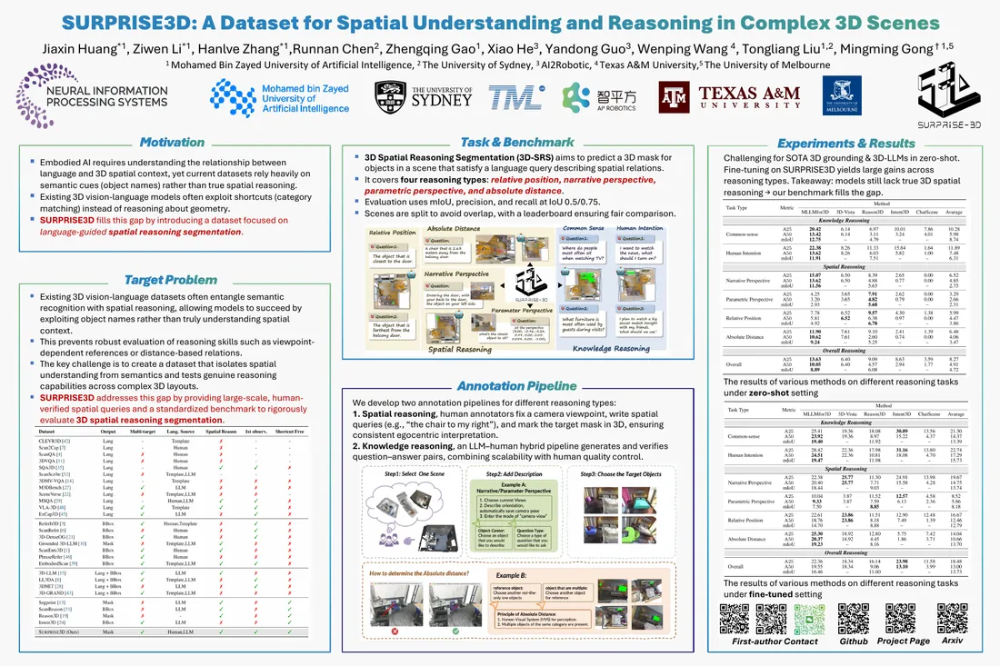

C7
SURPRISE3D: A Dataset for Spatial Understanding and Reasoning in Complex 3D Scenes
arXivProceedingsProject pageCodeDatasetPoster (PDF)
A benchmark for 3D spatial reasoning segmentation: 200k+ vision-language pairs over 900+ ScanNet++ scenes, including 89k+ human-written spatial queries that name no object. Spatial queries cover relative position, absolute distance, and narrative and parametric perspective; knowledge queries cover common sense and human intention.
